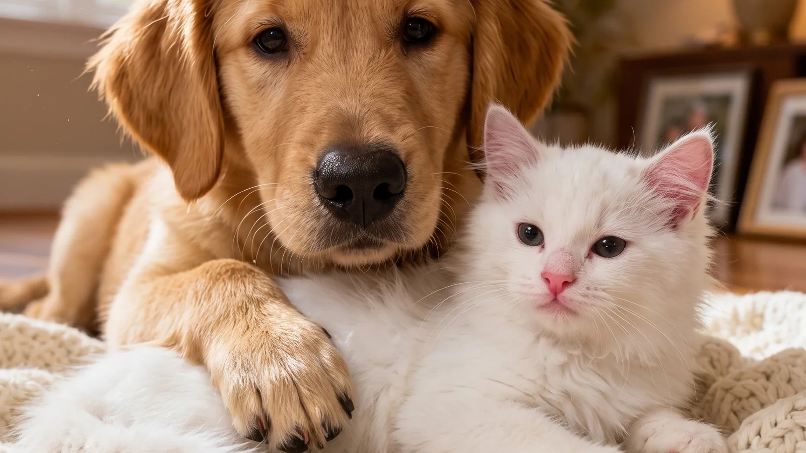

Site para pet shop em Campina Grande do Sul: banho, tosa e ração

Um pet shop recebe dois tipos de procura e elas chegam por caminhos diferentes. Tem a apressada, de quem quer banho e tosa antes do sábado ou descobriu hoje que a ração acabou. E tem a de rotina, do cliente que só precisa confirmar horário. Um site para pet shop em Campina Grande do Sul cumpre o papel quando responde às duas em segundos: o que a loja faz, até onde entrega, como se agenda e quanto custa mais ou menos.
Essa é justamente a parte que a maioria das lojas da região resolve pela metade. O designer Eros Gomes, que mora em Piraquara e atende a região metropolitana de Curitiba, vê o mesmo retrato em muitos negócios de bairro: atendimento bom, cliente fiel de anos, e uma presença na internet incapaz de provar isso para quem ainda não conhece a loja.
Pet shop tem uma vantagem que poucos ramos locais têm. A compra volta. Ração acaba, unha cresce, vacina vence. O trabalho da página é encurtar o caminho dessa repetição.
O que um site para pet shop em Campina Grande do Sul precisa resolver
Cinco coisas, nesta ordem de importância: quais serviços a loja faz, qual o endereço e o horário, até qual bairro ela entrega, como o cliente agenda banho e tosa, e que faixa de preço esperar. Tudo isso cabe numa página só. Nada disso exige loja virtual.
A lista parece óbvia e é por isso mesmo que fica de fora. Quem convive com a loja todo dia esquece que o vizinho novo do condomínio não sabe se há atendimento no sábado ou se a tosa higiênica sai no mesmo dia. O Nielsen Norman Group documenta há décadas que o visitante varre a página procurando confirmação em vez de ler linha por linha. Em pet shop essa confirmação é operacional, quase burocrática.
Campina Grande do Sul ajuda a entender o tamanho certo do projeto. É uma cidade de algumas dezenas de milhares de habitantes, com bairros espalhados ao longo da rodovia e uma parcela grande de moradores que trabalha em Curitiba ou em Pinhais. Esse morador decide no celular, no intervalo, e o critério inicial dele quase sempre é distância somada a horário possível.
| Serviço do pet shop | O que o cliente quer saber antes de chamar | Erro comum na página |
|---|---|---|
| Banho e tosa | Porte atendido, se busca em casa, quanto tempo o animal fica, faixa de preço | Foto de cachorro bonito sem nenhuma informação de agenda |
| Ração e acessórios | Marcas trabalhadas, tamanhos de embalagem, se entrega e até onde | "Trabalhamos com as melhores marcas do mercado" |
| Consulta veterinária | Dias e horários do veterinário, se atende urgência, se aplica vacina | Serviço citado numa lista, sem horário nem forma de marcar |
| Hospedagem ou creche | Preço por diária, exigência de vacina, como é a rotina do animal | Nenhuma foto do espaço real onde o animal fica |
| Táxi dog | Bairros atendidos, custo, antecedência necessária | Serviço que existe na prática e não aparece em lugar nenhum |
Agendamento de banho e tosa é o que mais trava
Na prática, o que o cliente chama de "agendar" é uma conversa curta no WhatsApp. Ele quer dizer o porte do cachorro, perguntar se tem vaga no sábado e ouvir um valor. O caminho mais eficiente numa página de pet shop é um botão que já abre essa conversa com o assunto preenchido, do tipo "banho e tosa, cachorro de porte médio, sábado de manhã".
Agenda online de verdade, com horário fechado e confirmação automática, resolve menos do que parece em loja pequena. Ela cria vaga marcada por quem não aparece e exige alguém administrando cancelamento todos os dias. O Sebrae insiste nesse ponto nos materiais de gestão para pequenos negócios: processo que ninguém tem tempo de operar vira abandono, e abandono visível custa mais caro do que a ausência do recurso.
Existe um detalhe que separa pet shop de quase todo outro comércio local: o serviço tem duração longa e variável. Banho e tosa de um animal de pelo comprido pode ocupar metade da manhã, e o dono organiza o dia em volta disso. A página que informa tempo médio por porte, horário de entrega do animal e se há busca em casa economiza três ou quatro mensagens por atendimento.
O mesmo raciocínio, aplicado a outro ramo de serviço, está no artigo sobre site para clínica odontológica em Quatro Barras.
Ração, delivery e o raio de entrega
Ração é compra de recorrência e de peso literal. Ninguém quer carregar quinze quilos de saco no carro se a loja do bairro entrega. Por isso o campo mais valioso dessa seção não é o catálogo, é o mapa: quais bairros a loja atende, qual o prazo e se há pedido mínimo.
Catálogo completo com estoque, frete calculado e pagamento online é outro patamar de projeto, com custo de manutenção diário. Para a maior parte das lojas de Campina Grande do Sul, a conta não fecha. O que fecha é publicar as marcas trabalhadas por nome, os tamanhos de embalagem disponíveis e um botão de pedido no WhatsApp. O site informa, a conversa vende.
| Canal | O que ele resolve bem | O que ele não resolve |
|---|---|---|
| Perfil no Instagram | Mostrar o antes e depois da tosa, lembrar o cliente antigo, dar sinal de vida | Aparecer para quem busca o serviço sem saber o nome da loja |
| Perfil no Google | Endereço, horário, rota, avaliações, telefone | Explicar serviço, preço, raio de entrega e regra de agendamento |
| Grupo de bairro no WhatsApp | Recompra de quem já é cliente e indicação entre vizinhos | Qualquer coisa fora daquele círculo de contatos |
| Site próprio | Serviços descritos, faixas de preço, bairros atendidos, agendamento em um toque | Substituir a presença diária nas redes, que continua necessária |
Os quatro se somam, nenhum anula o outro. A diferença é que três deles são emprestados e um é endereço próprio.
Por que o perfil sozinho deixa dinheiro na mesa
Porque ele depende de o cliente já saber o nome da loja. A busca que mais importa para pet shop é a que não tem nome nenhum: alguém digita o serviço junto do bairro no celular e escolhe entre o que aparece. O Think with Google vem repetindo há anos que boa parte das decisões de compra local começa numa busca rápida feita no telefone.
Nessa busca, o perfil social raramente responde. Ele não tem página de serviço, não tem texto que o buscador consiga ler como resposta, e o horário que importa está dentro de um story que expirou ontem. Já a página própria responde e continua respondendo seis meses depois.
Tem também a questão de confiança, que em pet shop pesa mais que em outros comércios. A pessoa está entregando um animal da família para um desconhecido. Foto real do espaço de banho, nome de quem atende, tempo de funcionamento da loja e dois ou três relatos de cliente com nome e bairro fazem mais trabalho do que qualquer adjetivo.
Quanto custa um site para pet shop e em quanto tempo fica pronto
As faixas são as mesmas de qualquer projeto de porte parecido, e um pet shop quase sempre cabe no escopo mais enxuto. Landing page fica entre R$ 2.500 e R$ 4.500. Site completo, com páginas separadas por serviço, entre R$ 4.500 e R$ 7.500.
| Escopo | Quando é a escolha certa para um pet shop | Investimento | Prazo |
|---|---|---|---|
| Landing page estática | Banho e tosa mais venda de ração, conteúdo que muda pouco | R$ 2.500 a R$ 4.500 | 7 a 15 dias |
| Landing page em WordPress | Mesma página, com a equipe trocando preço e promoção sozinha | R$ 2.500 a R$ 4.500 | 15 a 30 dias |
| Site completo | Veterinário, hospedagem, creche e táxi dog, cada um com página própria | R$ 4.500 a R$ 7.500 | 20 a 40 dias |
| Identidade visual | Quando o logotipo não existe em arquivo editável ou foi feito no improviso | Orçado à parte, conforme o que já existe | Definido no escopo |
Todo prazo acima conta da entrega do conteúdo, nunca da assinatura do contrato. Quem atrasa um projeto de pet shop quase sempre atrasa na foto: o espaço precisa estar arrumado e bem iluminado no dia em que alguém fotografa.
A escolha entre WordPress e código estático não é questão de orçamento. Ela depende da manutenção que a página vai exigir depois de publicada. WordPress entra quando alguém da loja vai mexer no texto com frequência, trocando promoção de ração ou preço de tosa. Código estático entra quando o conteúdo é estável e a prioridade é velocidade de carregamento.
Uma divisão que evita discussão lá na frente: o SEO técnico da própria página vem incluso, com títulos, dados estruturados, sitemap, imagens otimizadas e velocidade, junto com a entrega dos arquivos do projeto. Domínio, hospedagem, certificado de segurança e a configuração de Google Search Console e Analytics ficam fora e podem ser orçados separadamente. O processo inteiro, com preço e prazo abertos, está na página de criação de sites em Piraquara.
Seis passos para sair do zero
Os três primeiros não dependem de contratar ninguém. Dependem de uma tarde de alguém que conhece a operação da loja por dentro.
- Liste os serviços com o nome que o cliente usa. "Tosa higiênica" e "tosa na máquina" são buscas diferentes. "Serviços de estética animal" não é busca de ninguém.
- Escreva o raio de entrega por bairro. Por extenso, com prazo e pedido mínimo se houver. É a dúvida que mais gera mensagem repetida.
- Defina faixas de preço por porte. Pequeno, médio e grande, com a ressalva de avaliação do animal. Faixa publicada encurta atendimento.
- Fotografe o espaço real. O banho, a tosa, a prateleira de ração, quem atende. Celular bom e luz do dia resolvem.
- Peça dois relatos de cliente com nome e bairro. Peça na hora em que o cliente busca o animal e elogia o resultado, que é quando ele aceita.
- Só então contrate a página. Com os cinco itens prontos, o briefing fica curto e o prazo encosta no limite de baixo da tabela.
O passo cinco é o mais ignorado e o de maior retorno. Relato colhido no calor da entrega sai específico, com o nome do cachorro e o problema que foi resolvido. Colhido meses depois sai genérico, quando sai.
Perguntas frequentes
Pet shop pequeno precisa de site ou o Instagram basta?
O perfil basta para quem já conhece a loja e sabe o nome dela. Não basta para quem digita o serviço e o bairro no celular sem ter nome nenhum em mente, que é a procura mais valiosa de um pet shop de bairro. O arranjo que funciona é perfil ativo para o dia a dia e uma página própria por trás dele com serviços, horário, raio de entrega e agendamento.
Preciso de sistema de agendamento online no site?
Na maioria dos casos não. Um botão de WhatsApp que já abre a conversa com o serviço, o porte do animal e o período preenchidos resolve bem e não cria fila fantasma na agenda. Agenda com horário fechado só compensa quando o volume de banho e tosa é alto o suficiente para alguém administrar cancelamento e remarcação todos os dias.
Devo publicar a tabela de preços de banho e tosa?
Vale publicar faixas por porte e tipo de pelagem, com a ressalva de que o valor final depende da avaliação do animal. Preço escondido faz o cliente perguntar para comparar e desistir no meio da conversa. Faixa publicada filtra quem nunca ia fechar e encurta o atendimento de quem ia.
Quanto custa um site para pet shop e em quanto tempo fica pronto?
Uma landing page fica entre R$ 2.500 e R$ 4.500, e um site completo entre R$ 4.500 e R$ 7.500. O prazo é de 7 a 15 dias para landing page estática, 15 a 30 dias para landing page em WordPress e 20 a 40 dias para site completo, sempre contados da entrega do conteúdo, não da assinatura do contrato.
O site resolve a venda de ração ou é melhor manter pelo WhatsApp?
Para a maior parte dos pet shops de bairro, o site informa e o WhatsApp vende. Loja virtual completa, com estoque, frete e pagamento, só se paga quando existe alguém cuidando dela todos os dias. Publicar as marcas trabalhadas, os tamanhos de embalagem, o raio de entrega e o prazo já captura quase toda a recompra sem esse custo.
Conclusão
Voltando às duas procuras do começo. Um site para pet shop em Campina Grande do Sul vale o investimento quando atende as duas sem que ninguém precise digitar uma pergunta: serviço descrito com o nome certo, horário visível, bairros de entrega escritos, faixa de preço por porte e um toque para abrir a conversa.
Quem quiser um diagnóstico direto pode mandar no WhatsApp (41) 98812-2525 o endereço do perfil ou do site da loja, os serviços que realmente são feitos lá dentro e os bairros atendidos. Com essas três informações dá para dizer o que está faltando na parte que não custa nada e se o caso pede landing page ou site completo.